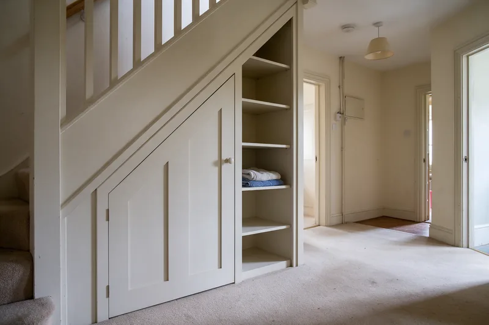

Home / Services / Fitted wardrobes and storage
Fitted wardrobes and storage
Fitted wardrobes and storage.
Built into the alcove you have, out of square walls and all. A square carcass, tapered fillers scribed to the plaster, up to the ceiling, with no gap on top for boxes and no daylight down the side.
The alcove problem, and the way round it
The space to the side of a chimney breast is the most common fitted wardrobe there is, and it is also the most awkward. The walls lean, they bow in the middle, the back wall is not a true right angle to either side, and the skirting sticks out at the bottom. A bought wardrobe is square, so it has to be set to the narrowest point, and then there is a tapering gap down each side and a shelf on top collecting dust.
A fitted job solves it by splitting the difference out. The carcass is still square, because doors and drawers only work in a square box. The difference between that square box and the actual room goes into a tapered filler each side and a panel across the top, and each of those is marked off the wall itself and cut to follow it, bows and all. What you see from the room is one flat front, floor to ceiling, wall to wall.
What goes inside is your decision, not ours
The inside is worth thinking about before anybody builds the outside, because it is cheap at the drawing stage and expensive afterwards. Long hanging for coats and dresses, short double hanging for shirts and trousers, which gets you twice the rail in the same space. Shelves for things that do not hang. Drawers low down where you can see into them rather than high up where you cannot.
Doors are the other choice. Hinged doors need room to swing and they let you see everything at once. Sliders need no room at all but you can only ever see half the wardrobe, and the mechanism has to be decent or it will annoy you daily. Neither is the right answer in general, only for your room.
And when a bought one is the sensible answer
If you are renting, if you might move within a couple of years, if you want to take it with you, or if the room is square and a standard width, a bought wardrobe is sensible and we will say so. Fitted makes sense when the space is awkward, when the ceiling is high enough that the top of a bought one is wasted space, or when you want the whole wall to read as part of the room.
 Generated photo
Generated photoGenerated for this demo. Not a photograph of a real job.
 Generated photo
Generated photoScribing a panel to the wall: a pencil held against a block, run down the plaster, and the line cut to.
In plan
Pushed in, or built in.
The same alcove twice, looked at from above. No wall in an old stone house is plumb and no alcove is square, which is the whole reason these two look different from the room.
Bought, and pushed into the alcove
The unit is square. The alcove is not, because the walls lean and bow and the chimney breast is not a true right angle. So it has to be set to the narrowest point, which leaves a gap down each side that gets wider as it goes back, and a gap on top. The gaps collect dust and boxes, and the one thing nobody can fix is the daylight you can see down the side.
Built in, with the difference scribed out
The carcass still has to be square, because doors and drawers only work if it is. What changes is that a tapered filler each side and a panel on top are marked off the actual wall and cut to follow it, bows and all. From the room you see one flat front, floor to ceiling, wall to wall. All the lying is in the fillers, which is exactly where it belongs.
Drawn in the browser rather than photographed. The lean on the walls is exaggerated, but only a bit.
On the job
How this one usually goes.
- Measure, and keep measuringWidth at the front, middle and back. Height at both sides and the middle. A level along the floor and a plumb line down each wall. Then the skirting, the picture rail, the socket, the radiator pipe and anything else in the way.
- Agree the inside before the outsideHanging, shelves and drawers worked out against what is actually going in it. This is the conversation worth having properly, because moving a rail later means taking a front apart.
- Made up off site where it suitsThe carcass and the doors made and finished where there is a bench, dust extraction and room to work, which keeps the dust out of your bedroom and the quality up.
- Fitted dry firstThe carcass in, levelled and packed, the fillers offered up and scribed to the wall with a pencil and a block, cut, and offered up again. Nothing gets fixed until it all closes dry.
- Fixed and trimmedFixed into timber rather than plaster, skirting returned into the front, cornice or a shadow line at the top, and the whole front checked across its length for an even line.
- Doors hung and adjustedHinges or runners that suit the weight of the doors, then adjusted so the gaps are even across the whole run. A row of doors is judged on the gaps between them, nothing else.
A sample running order for this demo. Yours depends on the property and what the timber turns out to be doing.
Questions
Asked about this job.
Can you make built in wardrobes to fit an alcove?
That is most of this job. The alcove by a chimney breast is the classic one and in an older house nothing in it is square.
The carcass gets built square, because doors and drawers need it, and the difference between that and the real wall goes into a tapered filler each side and a panel on top, all scribed off the wall itself. From the room you see one flat front with no gap down the side and nothing collecting dust on the top.
Up to the ceiling, or stop short?
Up to the ceiling nearly every time, with a scribed panel or a cornice closing the gap. The top of a wardrobe is the worst storage in any house: you cannot see it, you cannot reach it and it collects dust and boxes.
The only reasons to stop short are a sloping ceiling where the doors would not clear, or a room where you want the wardrobe to read as furniture rather than as part of the wall.
Painted or oak?
Painted carcasses with painted doors are the most common, usually sheet material because it stays flat and takes paint beautifully, with solid timber where there is wear or a sharp edge.
Oak or another hardwood is lovely for doors, a shelf edge or a handle rail, and it changes the method rather than just the price: heavier doors want better hinges, and the timber has to be finished on all its faces so it moves evenly.
Hinged doors or sliding?
Hinged if you have room for them to swing, because you can see the whole wardrobe at once and the mechanism is simple and lasts.
Sliding if the room is tight, with the trade off that half the wardrobe is always hidden and the gear has to be decent. Cheap sliding gear is a daily annoyance for years, so if it is sliding it is worth spending on.
Can you work round a radiator, a socket or a boxed in pipe?
Yes, and it is normal rather than a problem. Pipes and sockets get boxed in neatly or the carcass gets cut round them, and anything that has to stay accessible stays accessible.
A radiator inside a wardrobe is the one we will push back on, because warm damp air in a closed box is how clothes end up smelling musty. There is usually a better answer and we will suggest it.
General trade knowledge written for this demo, not advice on your property.
Our work
Sample jobs like this.
Generated photoAn alcove that was not squareHebden Bridge · Sample
Generated photoUnder the stairs, used at lastTodmorden · SampleGenerated photoScribed to a wall that bowsRipponden · SampleMade up samples with generated pictures. Tap one for the detail.
Also
The other things we do.
Internal doors and fire doors
Hung to the opening you have rather than the one the door was made for. Recesses cut by hand, gaps even all the way round, and it still shuts in August.
More →Staircases and banisters
New spindles and handrails, newel posts, and the creaks taken out of a flight that has been annoying somebody for years. Fitted so the whole thing feels solid under your hand.
More →Skirting, architrave and flooring prep
Long runs scribed into corners rather than mitred and filled, architrave tight at the head, and floors made flat and quiet before anybody lays anything on them.
More →Sash and timber window repairs
Rotten sections spliced out and new timber let in, sash cords and weights sorted, and the whole thing working again without a plastic window going in.
More →Decking and garden joinery
Decks, gates, stores and screens, framed properly and set so water runs off rather than sits. Outside timber either drains or it rots, and the framing decides which.
More →Shall somebody come and measure it?
Tell us the job and your postcode. Twenty minutes with a tape and a level tells us more than any photograph.